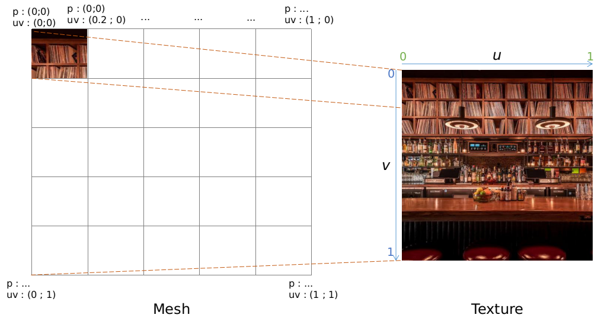

Amélioration du rendu 3D : Les textures
It should be a very cool 3D animation here, but your dinosaur does not support canvas tag.
It's time to come back to the present days... :(
Ouch, your dinosaur does not support WebGL2 yet.
It's time to come back to the present days...
<animés par la passion>
© Zenika 2019. All rights reserved.
